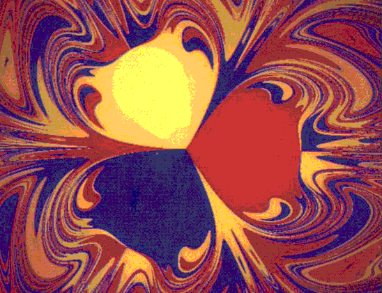

| Arrange three magnets on the vertices of an equilateral triangle on a horizontal surface. |
| Paint one magnet red, one yellow, and one blue. |
| Suspend an iron pendulum above the magnets. |
| Wherever the pendulum is released, it will eventually come to rest over one of the three magnets. |
| Paint the starting point with the color of the magnet over which the pendulum eventually comes to rest. |
|  |
| Here is an example of such a plot. Magnifying any portion of the boundary reveals the Wada property: any point on the boundary between two regions is also on the boundary of the third. |
| The videotape Fractals: an Animated Discussion by H-O Peitgen contains an instructive animation of this problem. |